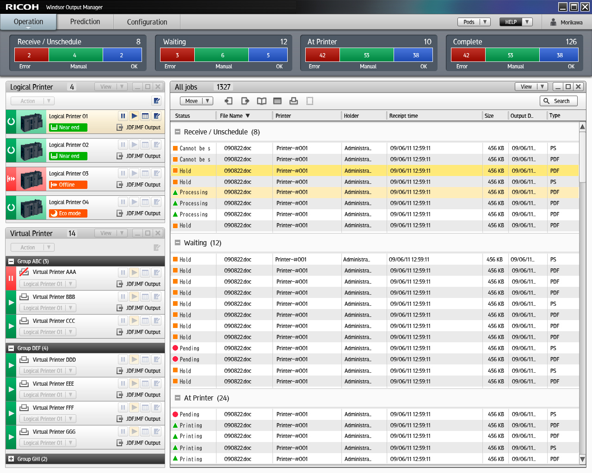
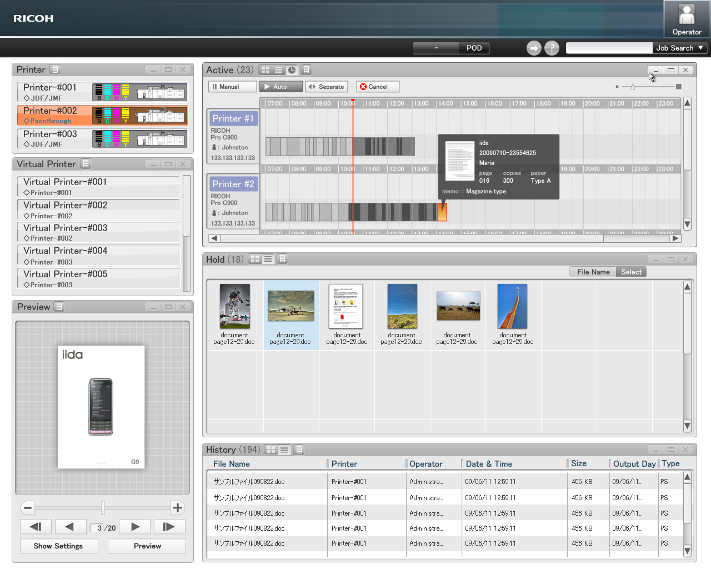
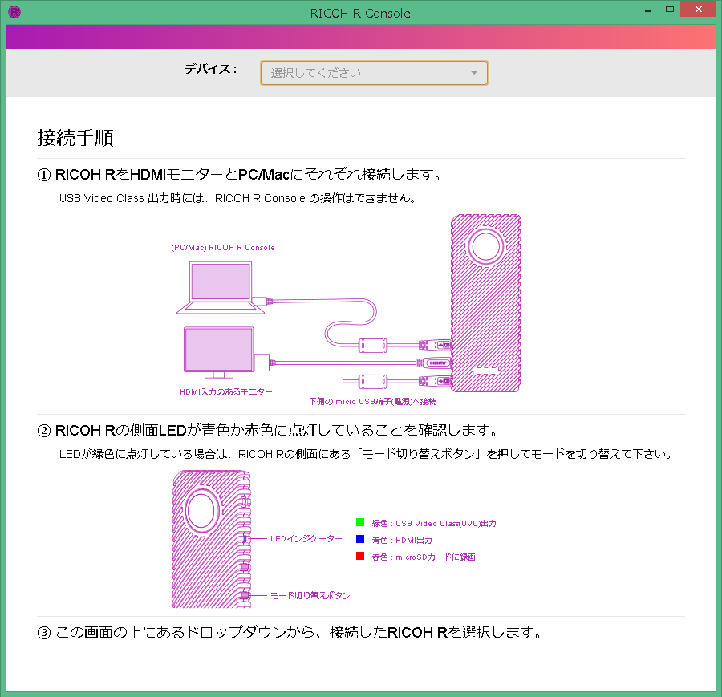
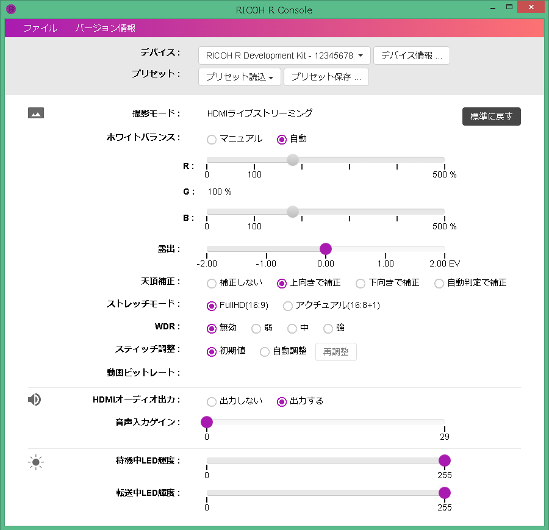

Selected Work — 07
エンタープライズ
UX設計
業務現場の調査から要件定義・画面設計・マニュアル制作まで。4名のデザイナーをディレクションしながら、企業向けの業務製品をいくつも設計・開発した。
Process
現場から始めて、製品に仕上げる。
ユーザーの職場に入って、実際の作業の流れと困りごとを観察するところから始める。ヒアリングでは出てこない無駄な手順を見つけ、要件定義・情報設計・画面設計・マニュアル制作まで、通してディレクションした。
01
現場調査
エスノグラフィー・業務観察・インタビュー
02
要件定義
業務フロー整理・情報設計・優先度設定
03
UI設計
ワイヤーフレーム・プロトタイプ・レビュー
04
開発連携
デザイン仕様書・エンジニアとの実装確認
05
ドキュメント
ユーザーマニュアル・サポート資料制作
Project 01
印刷会社向け
業務ワークフロー管理システム
印刷会社の制作現場に繰り返し入り、入稿から出力・納品までの全工程を観察した。何人もの担当者が同時に案件を回す現場で、どこまで進んだかと、どれを先にやるかを決めやすくする画面を作った。ジョブの状態・担当者・優先度・期限が1画面で分かる。
デジタル印刷機が広がる中で、印刷機そのものの魅力に加えて、現場で大量のジョブを次々と流しながら「何がどこまで進み、どこで詰まっているのか」をマネジメントできるようになった。業界で標準だった競合製品が拾えていなかった現場の困りごとを入れたので、他社との違いにもなった。現場からは、「自分で手作業で集計していた情報がここで見られるのでありがたい」という声をもらった。

ジョブ管理の画面。状態ごとの一覧と、印刷物のサムネイル

タイムラインの画面。ジョブの進み具合とファイルの中身を見る
Project 02
全天球カメラ
コントロールUI
RICOH R Development Kit をPCから操作するアプリ。RDKは、360度映像をずっと配信し続けることを目指した実験的な製品だった。使うのは開発者と業務で使う人。機器の接続から撮影の設定、プリセットの管理まで、専門的な設定を分かりやすく並べた。そのために自分でも配信し、配信する人にも使ってもらいながら、どの設定が要るか、どこまで細かく触らせるか、どんな場面で使うかを詰めていった。ホワイトバランス・露出・天頂補正・HDMI出力など、現場でよく触る設定を迷わず操作できるようにした。

接続手順ガイド画面

カメラパラメータ設定画面
ユーザーマニュアルもHTMLで作った。機能・操作手順・困ったときの対処を項目ごとに分け、開発キットを社外に出すのに合わせて公開した。